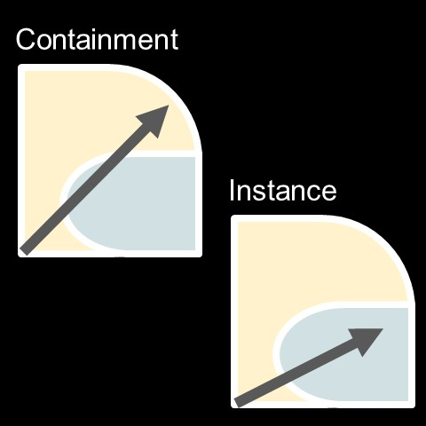
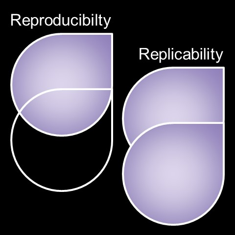
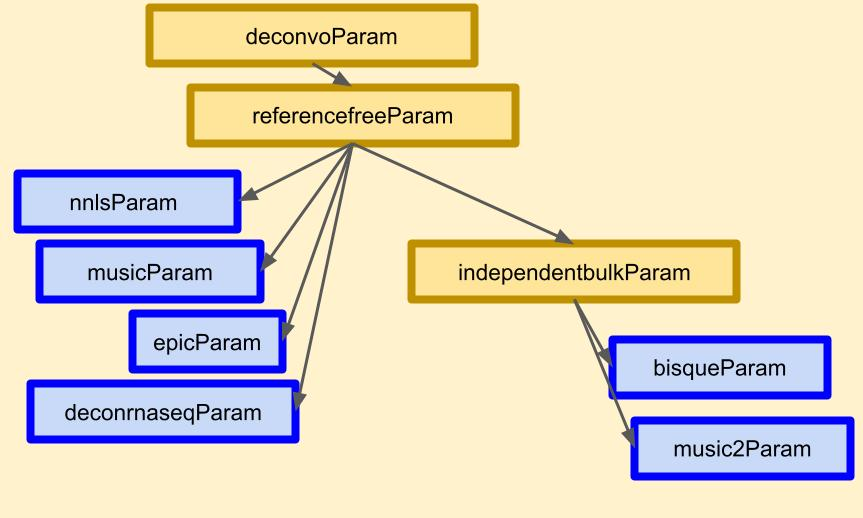

The case for containers in computation
Sean Maden
July 30, 2024
In this blog, we explore the following key questions:
- 1. What are containers and why are they important for users, developers, and researchers?
- 2. In programming and computational research, what are the benefits of container use and risks of not using them?
- 3. How does familiarity with containers benefit your career; what projects and fields aleady make extensive use of this important technology?
1. Overview of container technologies
1a. Key definitions for container technologies
Containerization is a means of bundling compute environment, including dependencies, with key software, data, and other deliverables for development. The key nomenclature includes the image and the container, where a container is simply a running instance of an image. The image is commonly a local instance or fork of a file, called a "Dockerfile". You can readily pull down Docker images and run containers from them with just one or two lines of code. Local mirrors of images can serve as the basis for reproducing prior work (see Section 2c, below) or developing new images by supporting dependency hierarchies (see Section 3, below).
If you do not program or develop software, don’t worry. Chances are you have worked with an operating system, or what we call the "native environment", on your desktop, laptop, or mobile device. Windows, Mac OS, and Linux are all examples of operating systems and common native environments for personal computing. Software such as Docker 1 allows seamless management of OS environments regardless of the type of OS you use most frequently. This flexibility is part of what makes container management systems a resource for development in the cloud (below).
1b. Defining software dependencies as container contents
A dependency is simply required software. Consider a hypothetical example of three software packages Z, Y, and X, where the first is dependent on the latter two. In other words, to be able to run software Z, softwares Y and X are also needed. Since each software is maintained independently, the version of each package is also important. Sometimes, dependency updates can break dependent software functionality, such as when an update to Y breaks a critical function of Z.
Dependency management can become time-consuming if not handled early and throughout a project's lifecycle. This is a key reason researchers published software names and versions in their methods and helps ensure their work is repeatable over time. Repeatable means the same results every time, a crucial feature of reproducible research (detailed in Section 2c, below). Here is where containerization really shines: instead of changing your day-to-day native OS environment, you can manage a separate image fork that is contained from the native environment.
2. Benefits of using containers

Figure 1. Depiction of containment and instance uses for containers, respectively. Containment is the isolated call of a software from its container as part of a process (e.g. workflow or pipeline) that primarily takes place in the native environment. Instance use is to primarily call the containerized environment for the process. Yellow areas represent the native environment, green areas represent the containerized environment run on the native system, gray arrays represent the process of the working directory or active directory for the process.
2a. Flexibility of code use and development environment
Flexibility is among the key benefits of using containerization for software development. Flexibility cuts both ways for containers, because it means that both the native environment and containerized environment can be optimized for specific process steps. Some software requires that users have sudo access, and this can be a core limitation for utilization of containers in high-performance compute settings where users typically lack full sudo access. However, in a local environment or cloud environment where one has sudo access, the dependency can either be supported in the container itself or outside the container.
Processes that use containers could use either the native compute environment used to host the container (i.e. what I call “containment” in Figure 1, above) or the container environment (i.e. what I call “instance” use in Figure 1, above). Cases where I would prefer the former use would be to reproduce a specific scientific result, to unit test a specific older version of a package, or to use a specific dependency for a specific task in a workflow or pipeline. Cases where I would prefer the latter would be to prepare code for release or publication, to develop a new dependency hierarchy, or to run a continuous process outside of the native environment.
2b. Modularity of code deployment and distribution
The next benefit to using containers is their modularity. Readers with prior software development experience can relate in terms of how a fully loadable and documented package is greater than the sum of its parts. It adheres well to common development standards. Containers serve as virtual environments that are isolated from their operating system, making them portable and modular. There are special considerations for working extensively with data in container environments. You could also work with lots of data and intermediate files inside a container by transferring from the native environment. But beware: datasets and intermediate files do not persist in containers on close. Instead, these vanish from the container and need to be saved externally for long-term access. Picture a kitchen tupperware or Prime delivery box; such containers are optimized for short-term storage of variable contents rather than long-term storage of specific contents.
Though this lack of data persistence may seem like a critical downside for container management software, it is more of a feature when we consider the mutability and flexibility of cloud compute drives, otherwise known as “volumes.” These are often optimized for a specific task or purpose, such as to either parse user account data or store order information, but not necessarily to do both.

Figure 2. Depiction of (left) reproducibility and (right) replicability, respectively. Reproducibility is the repetition of results with the same data and methods. Replicability is the repetition of results with the same methods but new data. White outlines represent methods and data schema, while purple represents key dataset information content components like the raw information (images, documents, etc.), processed elements (normalizations, merges, etc.), independent and dependent variables (variables, model hyperparameters, etc.), and analysis-derived results (summaries, predictions, outcomes, scores, trained models, etc.).
2c. Reproducibility of results from computational operations and workflows
Reproducibility (Figure 2, above) is a key concept in the sciences, and in particular computational disciplines. Reproducibility means that a result can be repeated using the same code and dataset. It is related to the concept of replicability, which is to repeat the same result using identical methods with a different dataset. Scientific standards that encourage reproducibility often also encourage replicability, and they typically demand that data be made open-access or shareable at the time results are published. Many of the most high-profile scientific journals have explicit reproducibility instructions (2, for example). This topic is so important that an entire Nature journal issue, called “Challenges in irreproducible research”, was devoted to the topic in October 2018 (3), and more articles on the state of reproducibility, as well as calls for improving reproducibility standards in computational disciplines, are released every year (4 and 5, for example). Given this motivation, let us focus on the concept of reproducibility as it pertains to developing and sharing code and software for science, or what could be considered the “computational methods” for data-driven research.
Containers may be preferable to similar tools for ensuring consistent software behavior, customer experience, and reproducible projects. These include virtual environment tools (VE tools) like Python Virtual Environments, mamba, and conda. VE tools are flexible, convenient, and compatible with high-performance compute environments. But the decentralized availability of VE-enabled dependencies across many locations is a risk factor for server availability. Lacking standard naming conventions of dependencies can also limit tool discoverability and impede on brand recognition from the user perspective. By contrast, Docker Hub 6 is centralized and reliable. It enables one-click or single-line commands to run an analysis or process, consistent with some of the highest standards for reproducibility (4 and 5). Further, the Docker Hub repository already includes many images of standard operating systems. Declaring these requires explicit statements of the software and its version as a “tag”, or version label, another key reproducible research practice when reporting methods.
2d. Usability of containers for individual projects
I used Docker Hub to develop images for several projects. In particular, I supported software that was only available from GitHub and not from a major bioinformatics repository such as Bioconductor 7 or CRAN 8. I developed images for a variety of software types, including an R/Bioconductor package, a Python package, a shiny dashboard, and an Entrez tools utility. You can view my available images by searching my username “madensean758” on Docker Hub.
Working with containers is rewarding for researchers, developers, and users of all levels. They are accessible, and using them allows one to appreciate the flexibility of operating systems to run many different types of software. Another compelling reason to use containers is to build a stronger portfolio for data science, software engineering, web design, and related disciplines. As noted elsewhere, strong applications often feature portfolio items such as software, packages, demos, dashboards, and websites that show off specific skills, and containers allow one to ensure those pieces are supported and runnable over time. You may even consider developing your own container system. Think of this as a “proto-Docker” system that could serve as a nice portfolio piece and could further support other portfolio pieces (e.g. for example, see the codecrafters-io/build-your-own-x GH repo). Ultimately, container systems are integral for cloud work (see Section 3b, below) and their use separates GUI-centric thinking and reinforces an understanding of dependency management and computational reproducibility.
3. Dependency hierarchies for computation

Figure 3. Example dependency hierarchy. Hierarchy depicts relationship of (blue boxes) deconvolution algorithms as organized according to (yellow boxes) common shared features and tasks such as available experiment data types, data structures, transformation steps, and preprocessing methods (image panel from Figure 1 in 9).
3a. Conceiving and acting on a dependency hierarchy
This brings us to something you might think of as a dependency hierarchy (Figure 3, above). When supporting a niche software with many dependencies, chances are you would need to devise a new image. Popular software like Python v3.10.1 is runnable from a container of its Docker Hub image, but this also requires C, JavaScript, and binaries to work. Thus image development often starts from a specific OS like Linux or one of its many great flavors. In short, the Linux type and version would be the new hierarchy’s basis.
Fortunately, we often don’t need to spend tons of time conceiving new dependency hierarchies when working with containers. For software development in bioinformatics, projects such as Bioconductor and Bioconda projects have us covered here. When I developed new images for a variety of application types, recent Docker Hub image mirrors for both projects worked great. The Bioconda project supports bioinformatics dependencies and mirrors of popular software (10 and 11). It may be preferable for certain command-line utilities, and I found it useful for running Entrez Query Utilities. Bioconductor is widely used in computational biology and adjacent fields for key analysis, visualization, and preprocessing. I used this to develop the Dockerfile for lute, an R/Bioconductor package for bulk transcriptomics deconvolution. During development, I added support for the lute dependency hierarchy after starting with the Bioconductor developer image as its basis. By analogy, if I was preparing pancakes for a brunch, the Bioconductor developer image would be like a pre-made mix that I used to prepare the batter, and the lute-specific dependency hierarchy would be key additions like spices and toppings.
Standards are improving over time for container use in bioinformatics and other fields (12-13, for example). Some great guides for domain-specific use are now available, such as the 10-step guide to supporting bioinformatics software from 14. The above Docker Hub repositories provide open access to many images supported by active developer communities. Importantly, Docker may not work for some use cases where root priveleges are required. In these cases, other containerization technologies could be preferrable. Singularity 15 is one of the major alternatives, and it may be favored for certain cloud and high-performance computing applications due to better support for shared systems. Whether using Docker or an alternative, containerization is well supported and widely used.
3b. Community support for updated images
Containers promote sharing because they are modular and portable, and because of the aforementioned development hierarchy and robust online hubs. Readily declare new branches and forks through the tagging system, and set up solutions for a given software across OS environments, or with varying programming language versions. Further, because of the ability to call their contents from your native environment as contained processes (Figure 1, above), containers can be readily traced, tracked, and monitored. This becomes vital for cloud and DevOps tasks, and it is a good idea to use containerized development environments in order to train in these topics. As cloud infrastructure continues to expand and technical innovations increase cloud capabilities, the hybrid GUI-programmer interfaces for Google Cloud, AWS, and Azure demand specific abstract knowledge about networked entities such as containers and container sets.
Whether transitioning into DevOps, Data Engineering, Data Science, or a related field, chances are you will need to use cloud environments. Working with containers is a great step towards familiarization with cloud development concepts like CI/CD 16, microservices 17, and ETL 18. Developing, sharing, and monitoring containers is a great practice to get into and relevant to these in-demand skills. Part-and-parcel with cloud environments is image utilization with container management, or "orchestration," systems such as Kubernetes (19). These which enable scalable and networked container deployment, monitoring, and management. Towards mastery of such systems, comfort with a technology like Docker or Singularity is useful to internalize the core functions of images and containers and grants an appreciation of the dynamism of dependency management.
4. Conclusions
I provided an overview of the Docker technology, including the definitions of images and containers, some of the development practices, basic use, advantages of containerization, and some of the key developer communities using containerization. It should now be clear how, rather than an ad hoc chore to be delayed to the last minute, dependency management is crucial for reproducible research and enterprise development.
4a. Further reading
More of my writing on software development and dependency management:
- 1. Maden. 2023. "Better benchmark workflows, and why you should use R with NextFlow". metamaden.github.io/inst/blog/rnfdeconvo.
- 2. Maden. 2021. "Run R package checks with a shell script". metamaden.github.io/inst/blog/rcheckbash.
4b. Works Cited
- 1. "Docker Docs". docs.docker.com.
- 2. Nature Portfolio. “Reporting Standards and Availability of Data, Materials, Code and Protocols.” nature.com/nature-portfolio/editorial-policies/reporting-standards.
- 3. “Challenges in Irreproducible Research.” nature.com/collections....
- 4. “Announcement: FAIR Data in Earth Science.” 2019. Nature 565 (7738): 134. d41586-019-00075-3.
- 5. Heil, Benjamin J, Michael M Hoffman, Florian Markowetz, Su-In Lee, Casey S Greene, and Stephanie C Hicks. 2021. “Reproducibility Standards for Machine Learning in the Life Sciences.” Nat. Methods 18 (10): 1132–35. doi.org/10.1038/s41592-021-01256-7.
- 6. Docker Hub. “Overview of Docker Hub.” docs.docker.com/docker-hub.
- 7. Bioconductor. “Bioconductor - Home.” bioconductor.org.
- 8. CRAN. “The Comprehensive R Archive Network.” cran.r-project.org.
- 9. Maden, Sean K., Louise A. Huuki-Myers, Sang Ho Kwon, Leonardo Collado-Torres, Kristen R. Maynard, and Stephanie C. Hicks. 2024. “Lute: Estimating the Cell Composition of Heterogeneous Tissue with Varying Cell Sizes Using Gene Expression.” bioRxiv. doi.org/10.1101/2024.04.04.588105.
- 10. “Build System 2014; Bioconda Documentation — Bioconda.github.io.” bioconda.github.io/contributor....
- 11. Grüning, Björn, Ryan Dale, Andreas Sjödin, Brad A Chapman, Jillian Rowe, Christopher H Tomkins-Tinch, Renan Valieris, Johannes Köster, and Bioconda Team. 2018. “Bioconda: Sustainable and Comprehensive Software Distribution for the Life Sciences.” Nat. Methods 15 (7): 475–76. doi.org/10.1038/s41592-018-0046-7.
- 12. Alessandri, Simone, Maria L Ratto, Sergio Rabellino, Gabriele Piacenti, Sandro Gepiro Contaldo, Simone Pernice, Marco Beccuti, Raffaele A Calogero, and Luca Alessandri. 2024. “CREDO: A Friendly Customizable, REproducible, DOcker File Generator for Bioinformatics Applications.” BMC Bioinformatics 25 (1): 110. doi.org/10.1186/s12859-024-05695-9.
- 13. Fay, Colin. “An Introduction to Docker for R Users — Colinfay.me.” colinfay.me/docker-r-reproducibility.
- 14. Nüst, Daniel, Vanessa Sochat, Ben Marwick, Stephen J Eglen, Tim Head, Tony Hirst, and Benjamin D Evans. 2020. “Ten Simple Rules for Writing Dockerfiles for Reproducible Data Science.” PLoS Comput. Biol. 16 (11): e1008316.
- 15. Singularity Docs. "Introduction to Singularity". docs.sylabs.io/guides/3.5/user-guide/introduction.html.
- 16. Amazon AWS Docs. “Understanding CI/CD - AWS Prescriptive Guidance.” docs.aws.amazon.com/prescriptive-guidance/latest/strategy-cicd-litmus.
- 17. Amazon AWS Docs. “What Are Microservices?” aws.amazon.com/microservices.
- 18. Amazon AWS Docs. “What Is ETL? - Extract Transform Load Explained.” aws.amazon.com/what-is/etl/.
- 19. “Production-Grade Container Orchestration — Kubernetes.io.” kubernetes.io.
Corrected on August 12, 2024